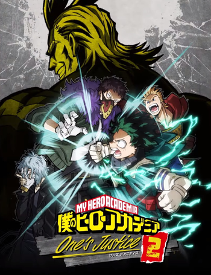

My Hero: One's Justice 2, también conocido como My Hero Academia: One's Justice 2 (僕のヒーローアカデミア One's Justice 2ワンズ ジャスティス 2, Boku no Hīrō Akademia Wanzu Jasutisu 2 ?) en Japón, es un videojuego de acción y lucha en escenarios 3D, secuela de My Hero One's Justice. Fue lanzado oficialmente en Japón el 12 de marzo de 2020 para PlayStation 4, Xbox One, Nintendo Switch y PC. En el resto del mundo se estrenó un día después, el 13 de marzo.
